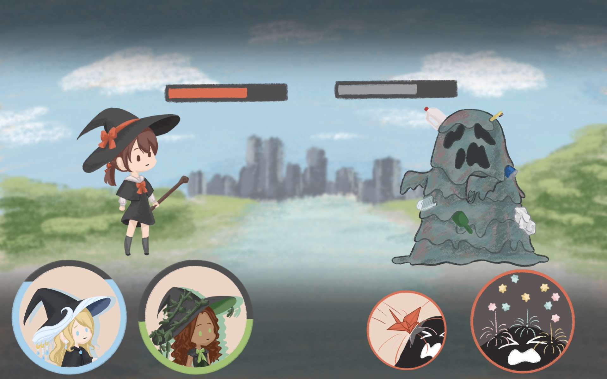
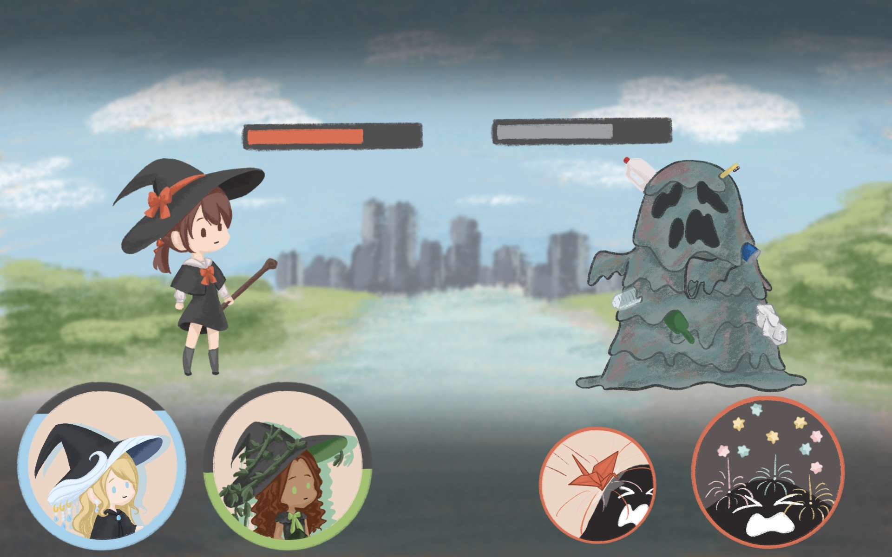

City Witch
City Witch 2023
Embark on a magical journey in City Witch, a turn-based RPG where players guide Remi, a young witch defending her city from disaster monsters. Inherited from her retiring grandmother, the duty unfolds through a narrative-rich, linear story. Engage in strategic battles with mini-games triggering powerful attacks, exploring the origins of monsters and reflecting on human distractions. City Witch delivers a captivating blend of gameplay and introspective storytelling in a spellbinding urban fantasy.
- 2-person project
- Design and draw all art assets
- Animation, background, UI, etc.
- Conceptualize narrative and settings


 
